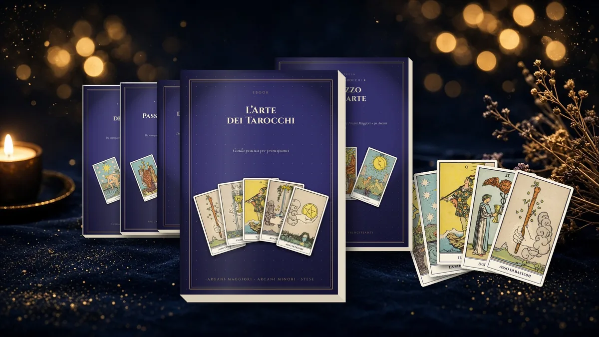
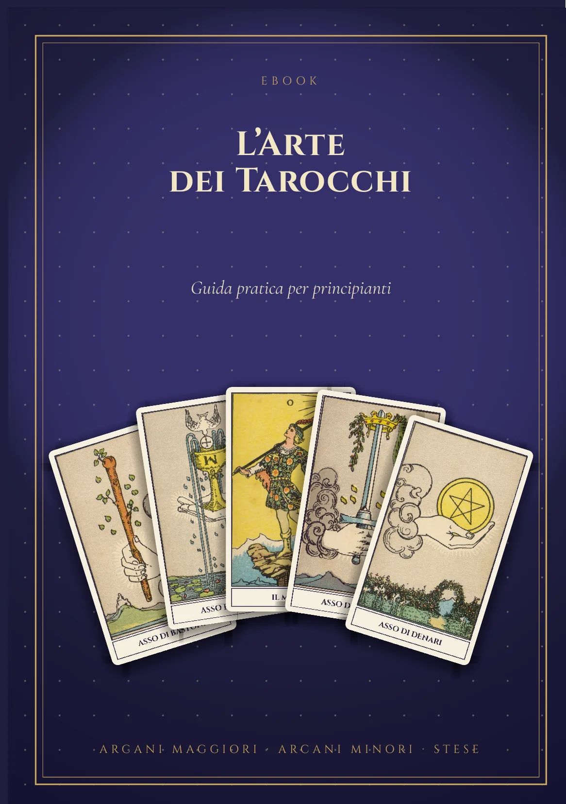
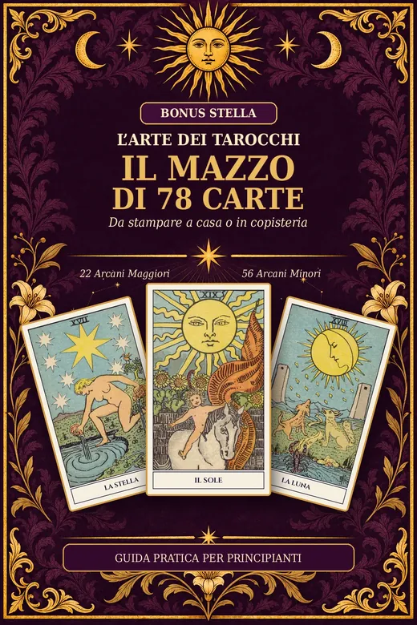
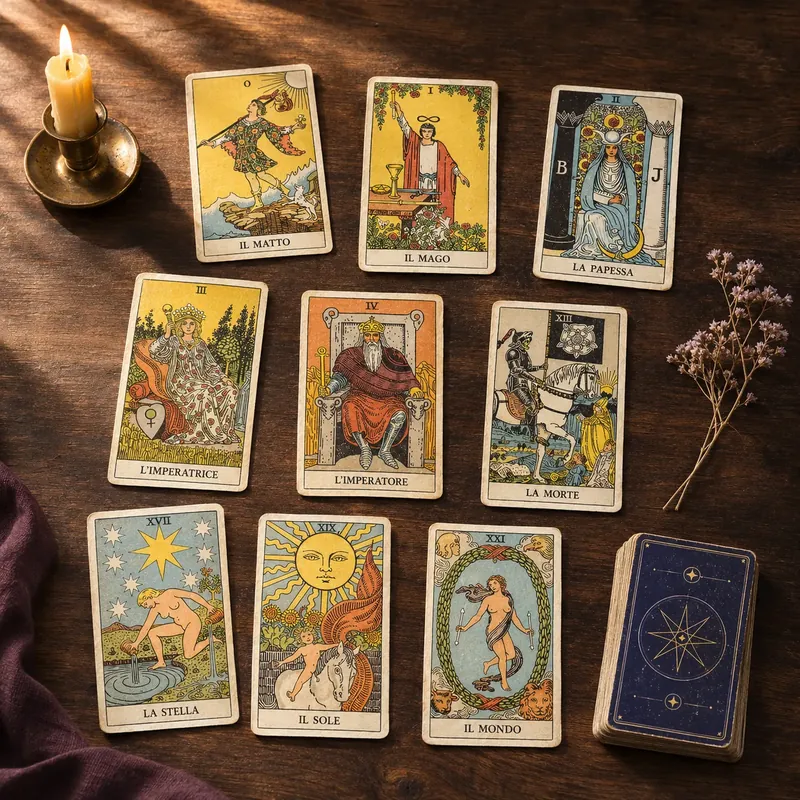
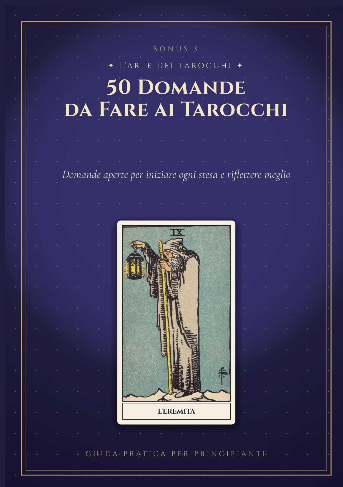
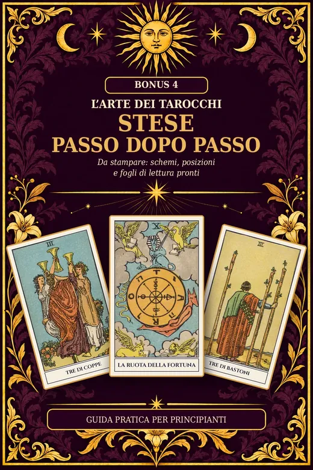

“Sono 78 carte, non me le ricorderò mai.”
Il muro delle 78 carte
Non devi. Ti basta capire come sono organizzate: 22 Arcani Maggiori e 56 Minori divisi in 4 semi. Il resto lo consulti quando serve.
Una guida pratica in PDF, con il mazzo completo da stampare, per capire come sono costruiti i tarocchi e iniziare a leggerli da zero, con un metodo semplice: 4 parole, 4 semi, una mappa.

Pagamento sicuro · PDF scaricabile subito · Garanzia 15 giorni
19,90 € · Accesso immediato · Garanzia 15 giorni
Ordina entro mezzanotte e fai la tua prima stesa oggi stesso.
Ti è mai capitato di avere un mazzo di tarocchi in mano (o di guardarne uno in vetrina) e pensare: “Bello, ma non fa per me”?
Settantotto carte, nomi strani, simboli ovunque. Sembra una materia per pochi, per chi “ha il dono” o per chi ha passato anni sui libri.
La verità è più semplice: i tarocchi hanno una struttura. Quando la vedi, il mazzo smette di essere un muro e diventa una mappa.
Se ti ritrovi in almeno uno di questi pensieri, questa guida è stata scritta per te.
“Sono 78 carte, non me le ricorderò mai.”
Non devi. Ti basta capire come sono organizzate: 22 Arcani Maggiori e 56 Minori divisi in 4 semi. Il resto lo consulti quando serve.
“Ci vuole un dono.”
I tarocchi sono un linguaggio di simboli. E i linguaggi si imparano: con un metodo, un po' di pratica e curiosità.
“Non so da dove cominciare.”
Arcani, semi, stese, carte dritte e rovesciate… Troppe informazioni sparse. Qui trovi un percorso in ordine, dal primo passo alla prima stesa.
“Conosco qualche significato, ma non so collegarli.”
È il blocco più comune. Ti mostriamo come dare un ruolo a ogni posizione e leggere le carte come un racconto.
“E se esce una carta ‘brutta’?”
La Morte, la Torre, il Dieci di Spade… Fanno paura per il nome, ma nella lettura parlano di fasi, cambiamenti, chiusure. Imparerai a leggerle con calma, senza farti spaventare dal nome.
“Si dice che il primo mazzo vada regalato…”
Lo sappiamo. 😉 Per questo il mazzo è incluso, da stampare: nessun acquisto in negozio, nessuna superstizione da sfidare.
“Sono scettica/o.”
Va benissimo. Non devi crederci per usare i tarocchi come strumento di riflessione: un modo diverso di guardare una situazione e farti domande migliori.
Quasi sempre i tarocchi vengono presentati così: 78 carte, 78 significati, una lista da studiare. È normale che sembrino una montagna.
Ma una lista di significati non ti insegna a leggere. Ti insegna a ripetere. E quando le carte sul tavolo sono tre, la lista non basta più.
Quello che manca non è il talento, né la memoria: manca la struttura. Capire perché il mazzo è fatto così: semi, numeri, figure, Arcani Maggiori. Una volta che la vedi, ogni carta ha un posto, e le carte cominciano a parlarsi tra loro.
È esattamente da qui che parte questa guida.
Ogni seme degli Arcani Minori racconta una parte della vita. Se sai queste quattro parole, hai già una chiave per 56 carte su 78:
azione, energia, progetti, iniziativa
emozioni, relazioni, desideri
pensieri, decisioni, parole, conflitti
lavoro, tempo, corpo, risorse
Poi c'è il numero, che ti dice a che punto sei: l'Asso è l'inizio, il Cinque è la svolta, il Dieci è il compimento. Seme + numero = una frase.
Le figure seguono uno schema: il Fante scopre, il Cavaliere agisce, la Regina vive dentro, il Re governa fuori.
E i 22 Arcani Maggiori? Sono le tappe di un viaggio, dal Matto (lo zero) al Mondo. Li conoscerai uno per uno, come capitoli di una storia.
quando vuoi, per riflettere su una situazione.
senza correre ogni volta su Google.
in una stesa e trasformarle in un racconto.
farti domande, mettere ordine nei pensieri, vedere una situazione da un'altra angolazione.
un momento tuo, una carta al giorno, un diario.
fai le tue stese quando vuoi, da sola/o, senza dover chiedere ogni volta a qualcun altro.
leggi le carte seguendo una struttura (4 parole, seme + numero, figure), anche se oggi parti da zero.
usa i tarocchi per mettere ordine nei pensieri e guardare una situazione da un'altra prospettiva.

il metodo delle 4 parole passo dopo passo, dalle basi alla tua prima stesa, con un esercizio alla fine di ogni capitolo e un piano di pratica di 21 giorni.
subito dopo il pagamento ricevi via email il link per scaricare tutto. Leggi da telefono, tablet o computer.
PDF A4, 28 pagine: 22 Arcani Maggiori + 56 Arcani Minori, con le illustrazioni originali del 1909 di Pamela Colman Smith, con i nomi in italiano. Non devi comprare nessun mazzo per iniziare.



una carta per pagina, con parole chiave, simboli da osservare, significato dritto e rovesciato, spunti per amore e lavoro e un consiglio in una frase. Il tuo dizionario da consultare quando vuoi.

i 4 elementi, come predisporre il tavolo, un piccolo rituale di 5 minuti per iniziare con calma e intenzione e come prenderti cura del tuo mazzo.

quando non sai come iniziare una stesa, parti da qui. Domande aperte, divise per temi, che aiutano a riflettere.

6 stese, dalla più semplice alla più completa: carta del giorno, Sì/No (da leggere come un termometro, non come una sentenza), due stese a tre carte, la stesa dell'amore e la Croce Celtica. Per ognuna: schema, significato di ogni posizione e un foglio di lettura da compilare.

carta del giorno per 4 settimane, fogli di lettura, una pagina per simboli e intuizioni e la checklist delle 78 carte, per vedere come cresce la tua lettura.
Pagamento sicuro · PDF scaricabile subito · Garanzia 15 giorni
19,90 € · Accesso immediato · Garanzia 15 giorni
Ordina entro mezzanotte e fai la tua prima stesa oggi stesso.
{{TESTIMONIANZA_1}}
{{TESTIMONIANZA_2}}
{{TESTIMONIANZA_3}}
{{TESTIMONIANZA_4}}
{{TESTIMONIANZA_5}}
{{TESTIMONIANZA_6}}
Ebook L'Arte dei Tarocchi — Guida pratica per principianti (65 pagine) + Bonus Stella: mazzo di 78 carte da stampare + 5 bonus
(IVA inclusa) · pagamento unico, nessun abbonamento
Pagamento sicuro · PDF scaricabile subito · Garanzia 15 giorni
19,90 € · Accesso immediato · Garanzia 15 giorni
Ordina entro mezzanotte e fai la tua prima stesa oggi stesso.
Hai 15 giorni per scaricare la guida, leggerla e provare le prime stese. Se ti accorgi che non fa per te, chiedi il rimborso entro 15 giorni dall'acquisto (direttamente dalla piattaforma di pagamento o scrivendoci a {{EMAIL_CONTATTO}}) e ti restituiamo l'intero importo. Nessuna domanda complicata.
Garanzia commerciale volontaria. Restano salvi i diritti previsti dal Codice del Consumo.
Qui trovi le risposte alle domande più comuni di chi si avvicina ai tarocchi per la prima volta. Non trovi la tua? Scrivici a {{EMAIL_CONTATTO}}.
No. La guida parte da zero, anche se non hai mai avuto un mazzo in mano.
No. Impari la struttura (semi, numeri, figure, Arcani Maggiori) e consulti i significati quando servono.
No. Serve curiosità e un po' di pratica.
Vai al tuo ritmo. La guida ti accompagna nella tua prima lettura semplice, passo dopo passo, e ti propone un piano di pratica di 21 giorni per prendere confidenza.
No: il mazzo completo di 78 carte è incluso, da stampare a casa o in copisteria. Se hai già un mazzo di 78 carte, puoi usare anche il tuo.
Sì, se è un mazzo da 78 carte con Arcani Maggiori e Minori: semi, numeri e figure funzionano allo stesso modo. Le immagini di riferimento della guida sono quelle del mazzo incluso (le illustrazioni originali del 1909 di Pamela Colman Smith, con i nomi in italiano), quindi con altri mazzi (per esempio i marsigliesi) qualche dettaglio può cambiare.
Sì. Il metodo funziona per le tue domande e per esercitarti con amici e familiari.
Questa guida non promette previsioni. Ti insegna a leggere i simboli delle carte e a usarli come strumento di riflessione e conoscenza di sé.
È un ebook pratico in PDF, con esercizi e materiali da stampare. Nessun video, nessun abbonamento.
Subito dopo il pagamento ricevi l'accesso via email. Il PDF è tuo: lo scarichi e lo rileggi quando vuoi.
Hai la garanzia di 15 giorni: scrivici e ti rimborsiamo.
Ebook L'Arte dei Tarocchi — Guida pratica per principianti (65 pagine) + Bonus Stella: mazzo di 78 carte da stampare + 5 bonus
(IVA inclusa) · pagamento unico, nessun abbonamento
Scarica L'Arte dei Tarocchi: 19,90 €Pagamento sicuro · PDF scaricabile subito · Garanzia 15 giorni
19,90 € · Accesso immediato · Garanzia 15 giorni
Ordina entro mezzanotte e fai la tua prima stesa oggi stesso.